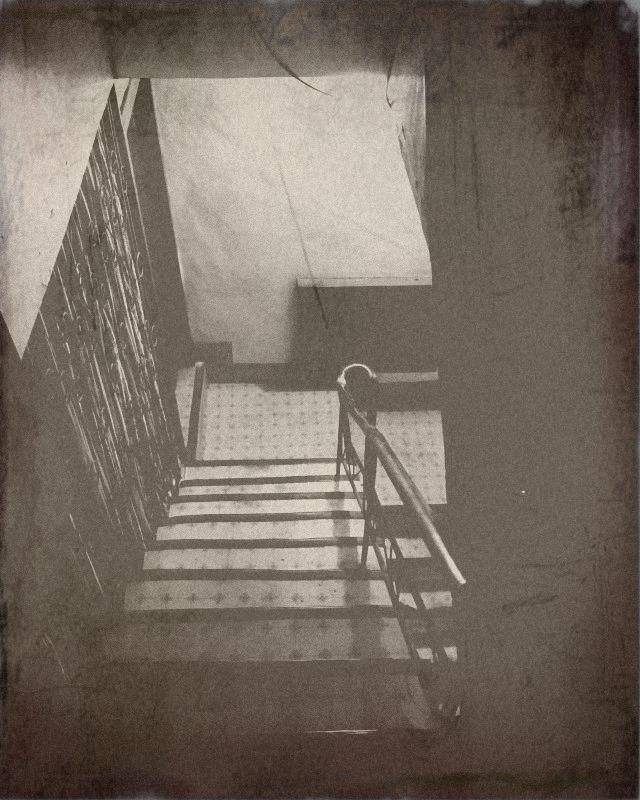
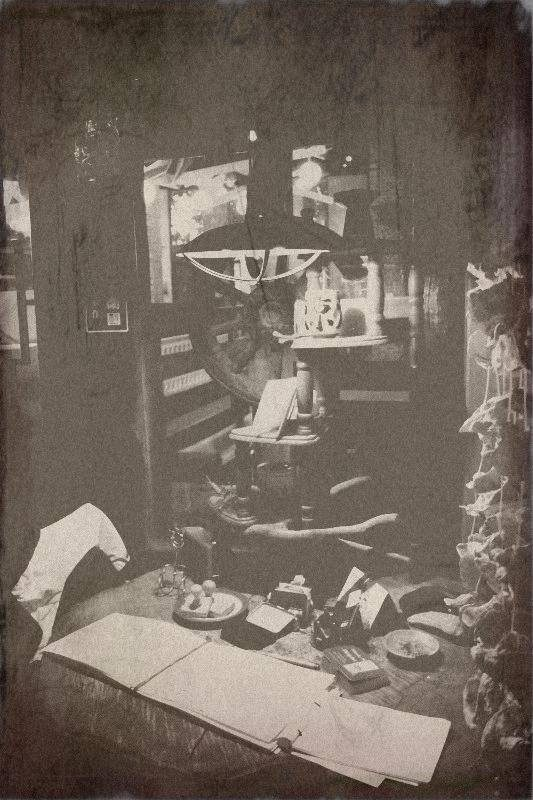

偷語者剪溜

「上次，最慘的賣掉沒？」
地板上放著一堆雜物，包括了一雙男鞋、一串鑰匙、一束凋萎的花、冰棒的包裝袋、幾個髮圈、一盤咖哩飯等等，他繞著那些東西走來走去，一下子捧起雙鞋看了看，一下子捧起咖哩飯聞聞味道。
那些東西，各自代表每個人的一段故事。
只要他聽到一個故事，就能得到一個最具代表性的東西。
比方說，某天他在公車上聽到一個女孩子邊哭邊講電話，似乎在向朋友傾訴失戀的痛苦。
他壓低漁夫帽豎耳傾聽，腦海中立刻浮現一個男子如何決意離去，清空了所有，唯獨留下那雙與女孩有關的鞋，失去主人的鞋。
就這樣，他隨身的望遠鏡包裡，憑空出現一雙皮質有點汙損的男鞋。
下定決心似的，他再度捧起那雙男鞋，仔細端詳鞋帶、鞋跟、皮質、楦頭，想像該是什麼樣的人會穿這雙鞋，這個人又會發生什麼故事……，想著想著，眼前浮現一連串如電影般的畫面，他趕緊拿起一旁的小瓶子，收攏那些畫面。
接著他把那個小瓶子放進望遠鏡包，裡面已經擺了好幾個同款的小瓶子。
窗外天色逐漸昏黃，他看看時鐘，從衣櫃裡一整排寬大的白襯衫挑出一件換上，戴好漁夫帽，揹起包包出門。
他先拐進小巷中常去的手搖茶攤，買了一杯飲料，略駝著背邊咬吸管邊慢慢走到最熱鬧的市中心，經過一整排玻璃帷幕的大樓，他轉進鋪著紅磚的街角，再跨一步，眼前出現一條黃土小路，路邊只有一幢矮平房。
平房屋簷掛著圓形的柑仔店招牌，他走近，伸手拍了一下掉漆的招牌，屋簷下坐在藤椅上打盹的男人醒過來，「你來啦，她在裡面。」
「嗯。」他冷冷一聲，磨石子地板在夏天中沁著涼意，他對櫃檯後抱著嬰兒的女人打招呼，露出罕見的笑容，「老闆娘。」
他將包包內的小瓶子悉數擺在櫃台上，順便從收銀台旁的罐子拿顆巧克力丟進嘴裡。
老闆娘打開其中一個瓶子，湊近鼻子聞了聞，愣了幾秒才滿意笑著說：「好悲傷的故事。」
「嗯。」他壓了一下頭上的漁夫帽，低頭喝著飲料。
老闆娘數數瓶子，攤開一本翻得千絲萬縷的筆記本寫下數字，然後推了推冰櫃，冰櫃倏然旋身，一整排貨架上全是款式相同、顏色各異的小瓶子。
「上次，最慘的賣掉沒？」他邊咬吸管邊問。
「等一下，」老闆娘安撫著開始啼哭的嬰兒，轉頭朝外面喊，「那個誰，上個月的報表呢？」
吱嘎一聲，他聽見外頭老闆從藤椅起身的聲音。
歡迎來到語巫們的柑仔店 ，
每天日落的魔幻時刻，為你說一個故事。
剪溜偷偷地來偷走我的傷心吧
